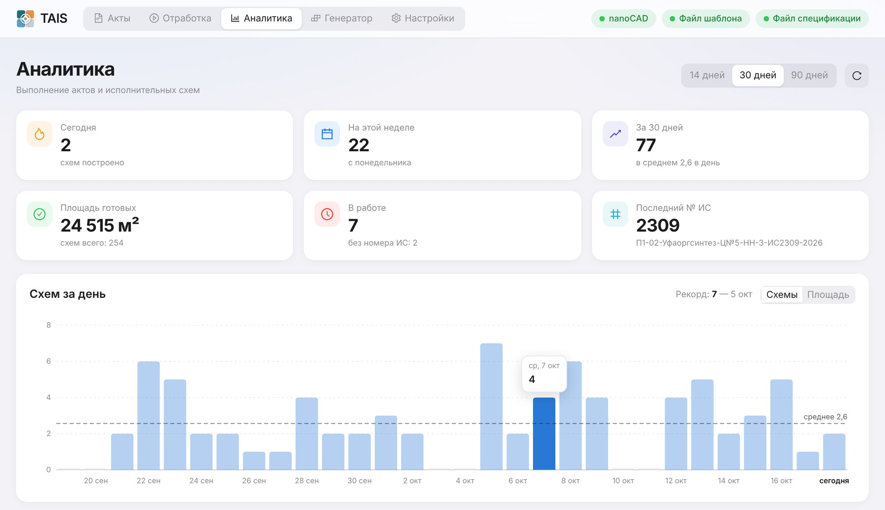
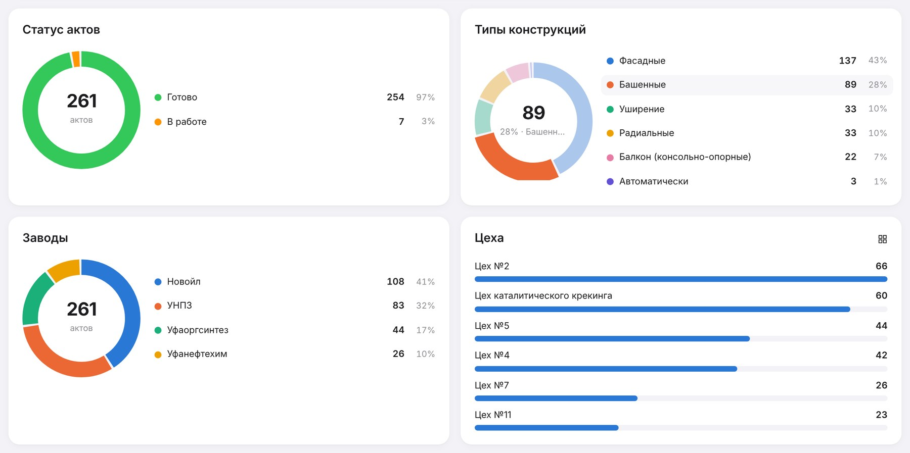

TAIS
Исполнительные схемы строительных лесов «Союз» в nanoCAD — по акту, автоматически
Авто-режим
Все типы конструкций
DWG · PDF · спецификация
Аналитика

ВЕРСИЯ 0.1 · WINDOWS · NANOCAD · ОКТЯБРЬ 2026
Разложить стойки, ригели, настилы, диагонали и лестницы по правилам сборки
Изометрия, виды спереди, сбоку и сверху, масштаб, высотные отметки
Номер ИС, акт, завод, место, таблица габаритов и площадь
Посчитать элементы и вес, вставить ситуационный план, распечатать A3 и A4
Вы вносите данные акта, TAIS рассчитывает конструкцию по правилам сборки и сам строит чертёж в nanoCAD на основе готового шаблона.


Все акты «В работе» строятся по порядку, без окна после каждого акта. Запустили — и занимаетесь своими делами.






Правила подобраны по реальным чертежам из архива и описаны в документе «Правила сборки лесов».
В шаблон вписываются дата, номер акта, номер ИС, завод и место, таблица габаритов с площадью — всё из данных акта.